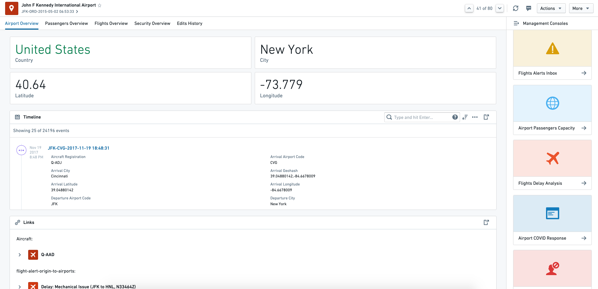
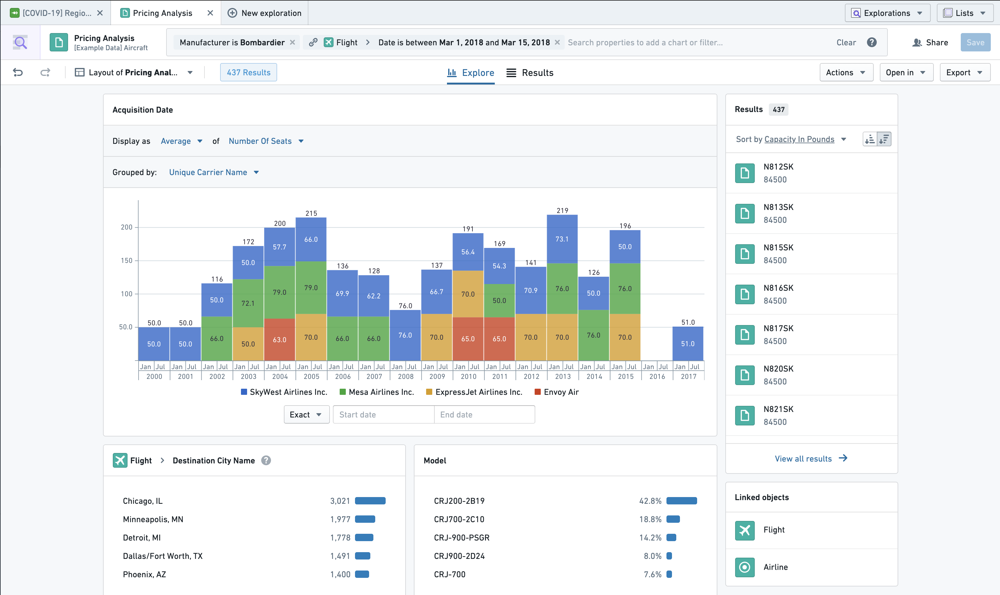
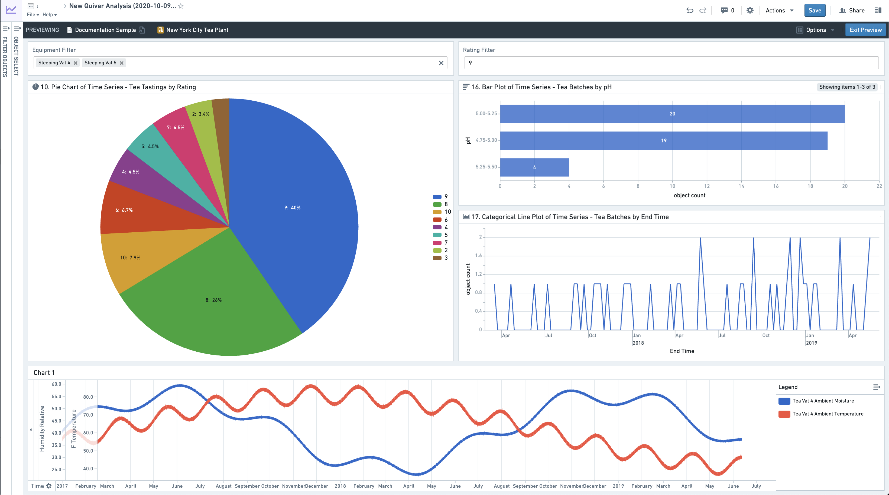
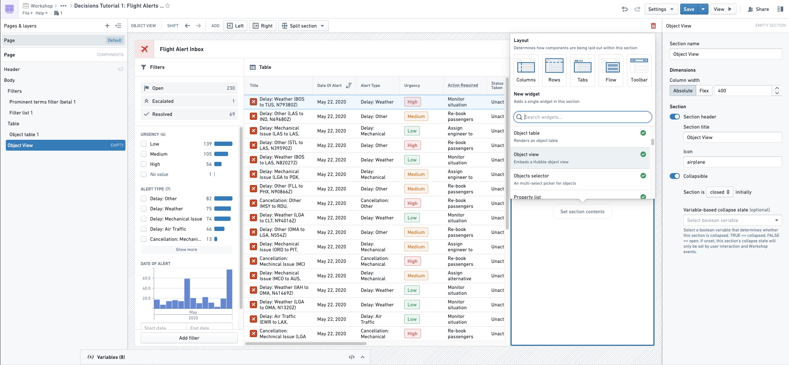
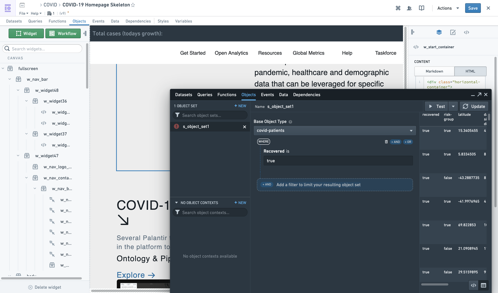
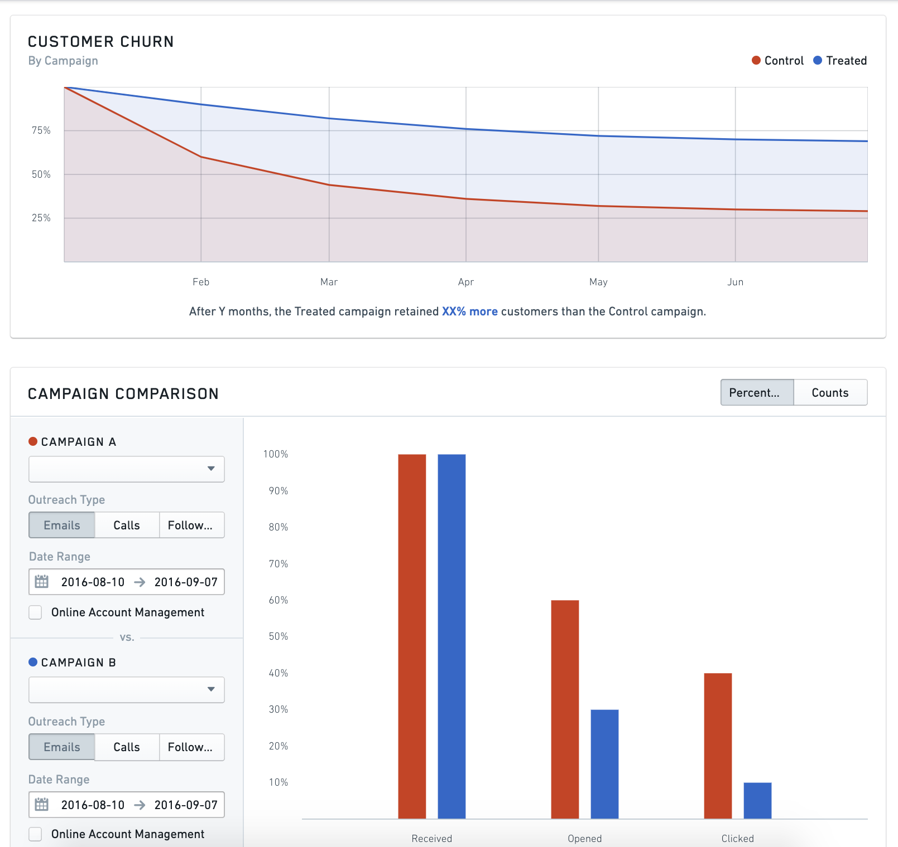
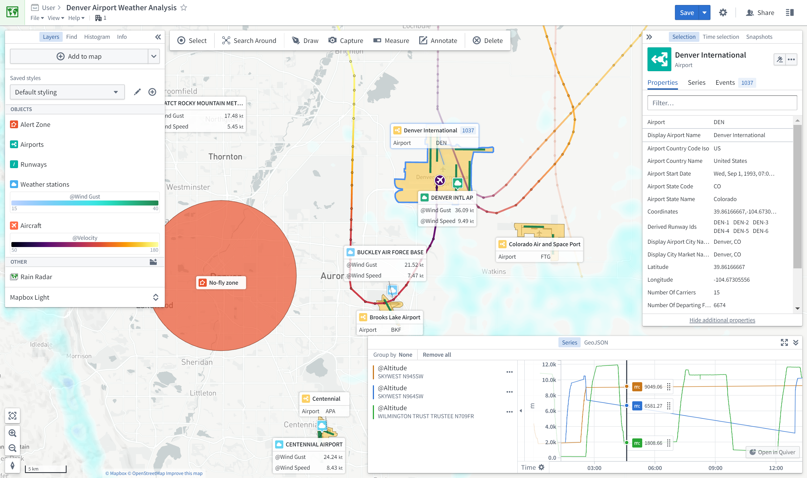

Foundry contains a number of applications developed to operate natively on top of the Ontology. Together, these object-aware applications deliver a powerful analytical and operational platform that supports a range of use cases and user profiles.
To learn more about why setting up an Ontology and using object-aware applications is valuable, see this page.
This page provides a reference to the available applications, and explains when you should use each:
Object Views are a central hub for all information and workflows related to a particular object. This includes key "biographical data" about an object, any linked objects, key related metrics, and links to (or embedding of) key analyses, dashboards, and applications related to the object.
For example, the Airport object type object view might provide the following information for each Airport object:
country, city, longitude, latitude, etc.Aircraft objects and Flight objects linked to the AirportAirport Covid Response workflowRoot-Cause Analysis of a Flight delay event related to the Airport
Object Explorer is a search and analysis tool for answering questions about anything in the Ontology layer. Users can visually compose search queries ranging from simple filters to Search Arounds to find objects of interest. From there, they can explore the resulting object sets using the exploration view or view them as a table of results. Additionally, users can compare and contrast object sets and take bulk Actions (for example, writeback) on the object set. Then, users can export the object sets or open them in compatible applications, such as Workshop.
The exploration view is a set of preset and configurable visualizations (such as charts or maps) that the user can further leverage to drill-down into specific subsets of objects. Object Explorer requires no pre-configuration and is geared towards less technical users.

Quiver enables advanced analytical workflows in the Ontology layer through a visual point-and-click interface and a powerful charting library. Quiver can be used to support anything from simple linear drill-down analyses to highly-branched and complex analyses with aggregations and statistical functions. Quiver also supports native time series analysis. Quiver analyses can be templatized into read-only dashboards for broader consumption.

Workshop enables point-and-click code-less application-building natively on the Ontology layer. Applications built in Workshop are more dynamic and interactive than typical dashboards created in other point-and-click tools.
By leveraging high-quality Layouts and an easy-to-use but sophisticated Events system, Workshop applications aim to be as user-friendly and high-quality as custom React applications.
Workshop Editor View

Final Workshop Module
Slate is a flexible application builder for Foundry that requires more technical configuration and code than Workshop. Slate applications interact with the Ontology layer, but can also interact directly with Foundry datasets. Slate enables significant visual customization based on web development paradigms and has a wide range of available features, but also requires more technical knowledge to build and maintain applications than Workshop.
Slate Editor View

Slate Application View

Carbon enables combining multiple resources or applications in Foundry to create highly curated workspaces for operational users. By allowing you to combine analytical results such as dashboards, applications built in Workshop or Slate, and out-of-the-box capabilities such as Object Views and Object Explorer, Carbon enables workflow builders to perform the "last mile" of customization to create a highly tailored and usable experience for end users.

The Map application allows you to bring together and analyze objects and other data in a geospatial context.

Each object-aware application varies on a few dimensions. Three particularly important dimensions are:
| Foundry Application | Primary use case | Workflow Style | Configuration Model | Objects or Datasets |
|---|---|---|---|---|
| Object Views | Discovery | Workflow-specific | Walk-up usable | Objects |
| Object Explorer | Discovery & Analysis | Exploratory | Walk-up usable | Objects |
| Quiver | Analysis & Dashboards | Exploratory (for Analytical mode); workflow-specific (for Dashboard mode) | Walk-up usable (for Analytical mode); customizable (for Dashboard mode) | Objects |
| Workshop | Applications & Dashboards | Workflow-specific | Customizable | Objects |
| Slate | Applications & Dashboards (complex) | Workflow-specific | Customizable | Objects (recommended) and Datasets |
| Map | Geospatial | Exploratory or Workflow-specific | Walk-up usable | Objects |
The main use cases supported by object-aware applications are Discovery, Analysis, Dashboards, and Applications.
Object-aware applications are optimized for primary workflow styles.
Certain applications like Quiver accommodate both workflow styles because while their primary mode is exploratory, the outputs can be configured into a more broadly consumed workflow-specific artifact. While Quiver Analyses are highly exploratory, they can be published as Quiver Dashboards that are pre-configured analytical views accessible to a broader audience.
The configuration model describes the extent to which the user interface must be configured before it can be leveraged by an end user.